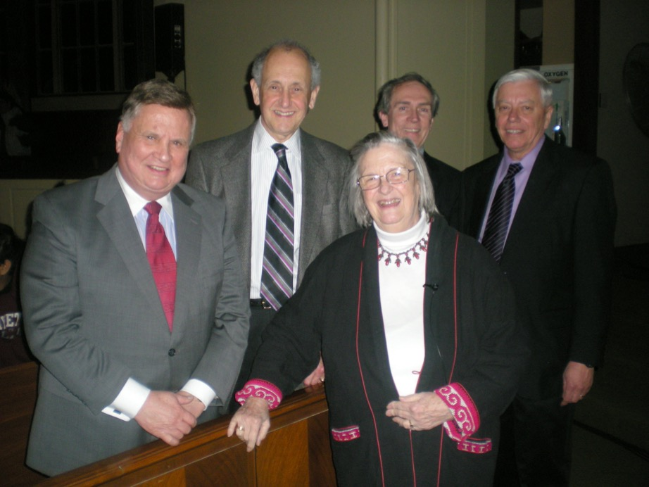

Earl Baker
Public Affairs Professional
Federalism

The idea of overlapping jurisdictions and shared governance has always fascinated me whether as a teacher and writer in the field, or a practitioner within the political system at several “levels.”
I believe William Penn had that sort of vision when he founded the Commonwealth of Pennsylvania in 1682 (and it has led a lot of people to be concerned ever since that our system of local government isn’t neat, orderly or more tidy). Elinor and her husband Vince have worked for years in the field of “political economy” to show that people working together at the local level are generally more efficient and more responsive than when a “top-down, one size fits all” approach is used to deal with community issues.
After hearing she received this Prize, which not only pleased me but also surprised me because the prevailing ideology in academe is hardly favorable to Elinor’s non-statist writings, I was further happy to be invited to attend a Symposium with her at Lafayette College in Easton by my long time associate and friend, federalism scholar John Kincaid, shortly after her receipt of the Prize. (The photo is of Nobel Laureate Elinor Ostrom. Joining her with me are professors Ben Schuster, John Kincaid and Conrad Weiler. John is the Director of the Meyner Center at Lafayette.)
Her simple and humble presentation of her research was refreshing. With a strong belief in the power of individuals to act in their own and their community’s best interest in cooperation with others at the local level, Elinor described the Nepalese farmers among whom her research was conducted. She told how their decision making was done in mutuality with their fellow farmers, and how the professional quality of their water control decisions was superior to those in top down control situations. I am sure I am not doing all her laborious research justice in this brief description, but that is the essence of it and it is compelling…and obviously the judges thought her (and her longtime colleague-husband’s) lifetime of substantial work should be recognized. Please visit her website for further information about the Ostroms and their many academic contributions to understanding how a multiple level, “federal,” form of government as our Constitution provides, works in a democracy.